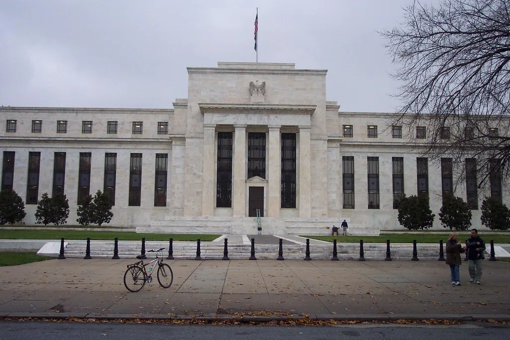

美 9월 고용 2.9만명 그친 '쇼크'…연준 10월 인상 전망 급락
미국의 9월 비농업 부문 신규 고용이 2만9천 명 증가에 그치며 시장 전망치를 크게 밑돈 것으로 나타났다. 전문가들이 내놓은 사전 전망치는 8만4천 명 수준이었던 만큼, 실제 발표치는 예상의 3분의 1 수준에 불과했던 셈이다. 같은 기간 실업률도 4.1%에서 4.2%로 소폭 올라, 고용시장의 둔화 흐름이 수치로 명확히 확인됐다는 평가가 나온다.
이번 고용지표는 발표 직후부터 금융시장에 적지 않은 파장을 일으켰다. 시카고상품거래소(CME) 선물시장에 반영된 10월 연방공개시장위원회(FOMC)의 추가 금리 인상 확률은 일주일 전 60%대에서 지표 발표 이후 20%대 초반까지 가파르게 떨어졌다. 불과 며칠 사이에 시장의 통화정책 전망이 크게 뒤바뀐 셈이며, 일각에서는 10월 회의에서 추가 인상 가능성이 사실상 희박해졌다는 분석도 나오고 있다.
고용 둔화의 배경으로는 기업들의 신규 채용 위축이 꼽힌다. 제조업과 일부 서비스업 분야에서 고용 증가세가 정체되거나 둔화되는 모습이 포착됐으며, 기업들이 불확실한 경기 전망 속에서 인력 충원에 신중한 태도를 보이고 있다는 해석이다. 다만 이번 지표만으로 미국 경기 전반이 급격히 냉각되고 있다고 단정하기는 이르다는 신중론도 함께 제기된다.

채권시장에서도 반응이 뚜렷했다. 장기 금리의 벤치마크 역할을 하는 미 국채 10년물 금리는 고용 둔화 소식에도 쉽게 낮아지지 않고 5%대 후반 수준에서 높은 수준을 유지하고 있는 것으로 전해진다. 시장에서는 고용은 식어가는데 장기 금리는 여전히 높은 수준을 유지하는 이례적인 조합을 두고, 인플레이션 우려와 경기 둔화 우려가 동시에 시장을 짓누르고 있다는 분석을 내놓고 있다.
전문가들의 반응은 엇갈린다. 일부 애널리스트는 이번 지표를 계기로 연준이 통화정책의 완급을 조절하며 좀 더 신중한 행보를 보일 것이라고 내다봤다. 반면 다른 쪽에서는 고용 둔화가 일시적 현상에 그칠 수 있다며, 향후 발표될 추가 지표를 좀 더 지켜봐야 한다는 신중한 입장을 유지하고 있다. 연준 내부에서도 위원들 간 통화정책 방향을 둘러싼 입장 차가 이어지고 있는 것으로 알려졌다. 일부 위원은 여전히 물가 상방 압력을 경계해야 한다는 입장을 고수하는 반면, 다른 위원들은 고용시장 둔화 신호를 더 무겁게 받아들여야 한다는 쪽에 무게를 싣고 있는 것으로 전해진다.
이번 고용지표발 충격은 한국 금융시장에도 영향을 미칠 수 있다는 관측이 나온다. 미국의 통화정책 방향은 환율과 외국인 자금 흐름에 직결되는 변수인 만큼, 국내 금융당국과 시장 참여자들도 향후 발표될 미국 경제지표와 연준 위원들의 발언을 예의주시하고 있다. 10월 FOMC 회의 결과가 확정되기까지는 당분간 고용·물가 지표를 둘러싼 시장의 신경전이 이어질 전망이다.
국내 증시와 외환시장도 이번 지표에 촉각을 곤두세우는 분위기다. 통상 미국의 통화 긴축 속도가 늦춰질 것이라는 신호는 신흥국 증시에 우호적으로 작용하는 경우가 많지만, 동시에 미국 경기 둔화 우려가 커지면 수출 의존도가 높은 한국 경제에는 부담 요인이 될 수 있다는 점에서 해석이 엇갈린다. 증권가에서는 당분간 미국發 지표 하나하나에 국내 지수와 원-달러 환율이 민감하게 반응하는 장세가 이어질 가능성이 크다고 보고 있다.